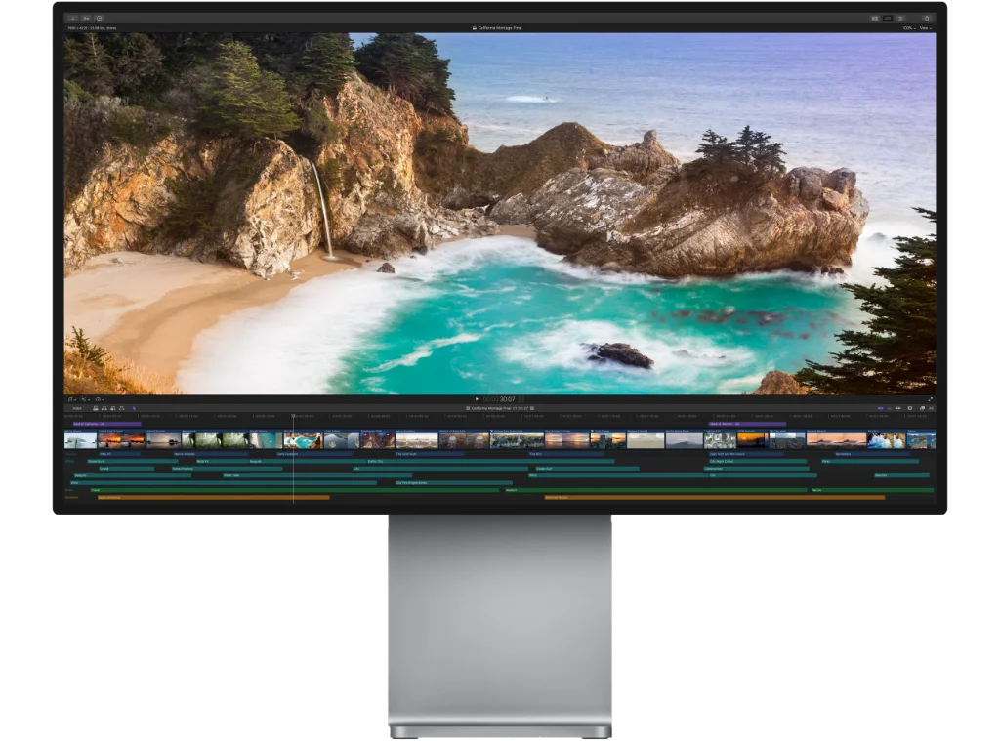

请访问原文链接：Apple Final Cut Pro 12.3 - 专业后期制作 (视频剪辑) 查看最新版。原创作品，转载请保留出处。
作者主页：sysin.org
Final Cut Pro
上演大智慧。
有了 Final Cut Pro，你可以在 Mac 和 iPad 上轻轻松松创作、打磨专业品质的视频大片。它满载众多强大的智能功能，助你将帧帧画面变为幕幕经典。

Apple 今日宣布推出 Final Cut Pro 12，开启 Mac 视频剪辑新篇章，同时推出 iPad 版 Final Cut Pro 3.0。
Mac 与 iPad 版 Final Cut Pro 新增了卓越的视频编辑工具和智能功能，为高度复杂的工作流提升效率。Pixelmator Pro 首次登陆 iPad，并专为 iPad 打造了针对触屏和 Apple Pencil 优化的独特体验。Mac 和 iPad 版音乐创作 app Logic Pro 新增 Synth Player 与和弦 ID 等智能功能，赋能所有人进行各类流行音乐的创作、制作和混音。Mac、iPad 和 iPhone 版 Keynote 讲演、Pages 文稿、Numbers 表格和无边记 app 均增添了高级内容和智能功能，供 Apple Creator Studio 订阅用户更好地表达自我、提升效率。

Apple Creator Studio 全套神技超值集合，为各路创作人而来。
Final Cut Pro 是 Apple Creator Studio 这套精选创意 app 中的一员，套装中还包括了 Logic Pro 和 Pixelmator Pro 等众多利器。
后期制作，上演华丽一幕
剪辑、音轨、图形特效、整片输出，一气呵成。
先进的调色功能、HDR 视频支持，以及 ProRes RAW。
全新 Metal 引擎。
360° 全景剪辑，用头戴式 VR 装置来回放。

Final Cut Pro - Compressor
强大的编码，传输，完成。
Compressor 与 Final Cut Pro 紧密整合，带来了自定义输出设置、分布式编码和丰富的传输功能。它支持 360° 全景视频、HDR、HEVC 和 MXF 输出，让你能以强大、灵活的方式导出 Final Cut Pro 项目。
Final Cut Pro - Motion
特效，特别容易。
Motion 是一款强大的运动图形工具，可帮你便捷地制作影院级的二维、三维和 360° 字幕，流畅的转场，以及逼真的实时特效。凭借全新的 Metal 引擎，Motion 还能让你以惊人的速度制作并播放特效。
版本记录
Final Cut Pro 12.2，2026 年 4 月 10 日
- 本更新包括稳定性提升和错误修复
Final Cut Pro 12.0，2026 年 1 月 29 日
强大的智能功能
- 通过搜索精确匹配项或使用自然语言描述，利用“听写文本搜索”快速查找素材中的所说字词或短语①
- 发现“视觉搜索”，可使用自然语言快速轻松地查找素材中的时刻，包括物体和动作①
- 让节拍检测分析任意歌曲以显示其小节和节拍，可让你轻松将视频编辑内容与音乐节奏对齐
快速开始
- 通过实力派唱作人 Allie Sherlock 参与的特别演示项目深入体验编辑，以及亲自探索 Final Cut Pro 的惊艳新功能
- 通过 App 内有关如何创建新资源库、导入媒体和将片段添加到新时间线的指南 (sysin)，加速你的下一步编辑
①需要搭载 Apple 芯片的 Mac
Final Cut Pro 11.2，2025 年 9 月 19 日
Final Cut Pro 11.2 包括以下优化和错误修复：
- 为 iPhone 上拍摄的 ProRes RAW 视频解锁更多控制功能，以便你调整曝光、色温、色调和去马赛克。（ProRes RAW 拍摄需要支持的 iPhone 机型。）
- 通过应用 Apple Log 2 LUT，以原始场景鲜明度编辑及播放 Apple Log 2 素材。
- 包括稳定性和性能提升。
Final Cut Pro 11.1，2025 年 3 月 27 日
Final Cut Pro 11.1 包括以下优化和错误修复：
- 将色彩校正和效果添加到时间线上方的调整片段，以一次应用到某个片段范围。
- 通过“图乐园”激发你的灵感，并使用 Apple 智能基于描述、建议概念或照片图库中的人物快速创建风格化图像。（需要搭载 M1 或后续芯片的 Mac 机型，且运行 macOS 15.2 或更高版本。）
- 通过重要的错误修复、性能提升以及用于显示或隐藏磁性蒙版编辑器的新键盘快捷键，加速你的磁性蒙版工作流程。
- 使用 Quantec QRS (Quantec Room Simulator) 效果，创建模拟真实声学空间的自然通透的音频混响。
- 在检查器中重新命名音频效果来保持整洁。
- 在浏览器中显示多机位角度或同步片段的源。
- 拖移片段中的标记以在时间线中移动，或者将标记拖出片段以移除。
Final Cut Pro 11.0，2024 年 11 月 13 日
Final Cut Pro 11 更加快速，更加智能。利用经人工智能优化的全新工具，通过改进的省时工作流程提高工作速度，还可编辑空间视频。
- 通过由人工智能驱动的创新磁性蒙版扩展创意自由的边界，无需绿幕或者耗时的手动转描即可分离出任何素材中的人物、物体和形状。
- 使用“转写为字幕”，即可通过针对速度和准确性构建的强大人工智能语言模型自动从时间线中的语音音频创建字幕。（需要搭载 Apple 芯片且运行 macOS Sequoia 或更高版本的 Mac。）
- 导入和编辑来自 Apple Vision Pro 或者 iPhone 15 Pro 或后续机型的空间视频片段；添加字幕、色彩校正和效果；以及共享可在 Apple Vision Pro 上查看的精彩空间项目。（需要搭载 Apple 芯片的 Mac。）
- 创建同步片段或多机位片段时，通过自动隐藏原始片段以避免浏览器杂乱。
- 使用“垂直缩放以适合”缩放片段高度来贴合时间线。
- 通过全新“画中画”和“放大”效果加速创意流程。
- 通过全新“模块化”转场创建精美视觉显示效果。
- 通过用于浏览器和时间线中常见任务的新键盘快捷键提高效率。
- 安装第三方媒体扩展以支持播放和编辑更多视频格式。（需要 macOS Sequoia 或更高版本。）
下载地址
App Store：https://apps.apple.com/app/final-cut-pro/id424389933?mt=12
CS App Store：https://apps.apple.com/app/final-cut-pro-create-video/id1631624924
Final Cut Pro 10.3，系统要求：OS X 10.11.4 或更新版本
百度网盘链接：[EoD]Final Cut Pro 10.4，系统要求：macOS 10.12.4 或更新版本
百度网盘链接：[EoD]Final Cut Pro 10.4.5，系统要求：macOS 10.13.2 或更新版本
百度网盘链接：[EoD]Final Cut Pro 10.4.10，系统要求：macOS 10.14.6 或更新版本
百度网盘链接：[EoD]Final Cut Pro 10.5，系统要求：macOS 10.15.6 或更新版本
Final Cut Pro - Compressor 4.5
Final Cut Pro - Motion 5.5
百度网盘链接：[EoD]Final Cut Pro 10.6，系统要求：macOS 11.5.1 或更新版本
Final Cut Pro - Compressor 4.6
Final Cut Pro - Motion 5.6
百度网盘链接：[EoD]Final Cut Pro 10.6.5，系统要求：macOS 11.5.1 或更新版本
Final Cut Pro - Compressor 4.6.3
Final Cut Pro - Motion 5.6.3
百度网盘链接：[EoD]Final Cut Pro 10.6.8，系统要求：macOS 12.6 或更新版本
Compressor 4.6.5
Motion 5.6.5
百度网盘链接：[EoD]Final Cut Pro 10.6.9，系统要求：macOS 13.4 或更新版本
Compressor 4.6.6
Motion 5.6.6
百度网盘链接：[EoD]Final Cut Pro 10.6.10，系统要求：macOS 13.4 或更新版本
Compressor 4.6.6 (Final Cut Pro 10.6.9)
Motion 5.6.7
百度网盘链接：[EoD]Final Cut Pro 10.7.0、10.7.1，系统要求：macOS 13.5 或更新版本
Compressor 4.7
Motion 5.7
百度网盘链接：[EoD]Final Cut Pro 10.8.0、10.8.1，系统要求：macOS 13.5 或更新版本
Compressor 4.8
Motion 5.8
百度网盘链接：[EoD]Final Cut Pro 11.0.0，系统要求：macOS 14.6 或更新版本
Compressor 4.9
Motion 5.9
百度网盘链接：[EoD]Final Cut Pro 11.1.0，系统要求：macOS 14.6 或更新版本
Compressor 4.10.0
Motion 5.10.0
百度网盘链接：[EoD]Final Cut Pro 11.2.0 Universal，系统要求：macOS 15.6 或更新版本
Compressor 4.11.0
Motion 5.11.0
百度网盘链接：[EoD]Final Cut Pro 12.0 Universal，系统要求：macOS 15.6 或更新版本
Compressor 5.0
Motion 6.0
百度网盘链接：[EoD]Final Cut Pro CS 12.0 ARM64，系统要求：macOS 15.6 或更新版本（仅限搭载 Apple 芯片的 Mac）
Compressor 5.0
Motion 6.0
百度网盘链接：[EoD]Final Cut Pro 12.2，系统要求：macOS 15.6 或更新版本
百度网盘链接：[EoD]Final Cut Pro CS 12.2，系统要求：macOS 15.6 或更新版本
Compressor 5.2
Motion 6.2
百度网盘链接：[EoD]Final Cut Pro 12.3，系统要求：macOS 15.6 或更新版本
百度网盘链接：<稍后更新>

文章用于推荐和分享优秀的软件产品及其相关技术，所有软件默认提供官方原版（免费版或试用版），免费分享。对于部分产品笔者加入了自己的理解和分析，方便学习和研究使用。任何内容若侵犯了您的版权，请联系作者删除。如果您喜欢这篇文章或者觉得它对您有所帮助，或者发现有不当之处，欢迎您发表评论，也欢迎您分享这个网站，或者赞赏一下作者，谢谢！
 支付宝赞赏
支付宝赞赏  微信赞赏
微信赞赏赞赏一下
敬请注册！点击 “登录” - “用户注册”（已知不支持 21.cn/189.cn 邮箱）。 请勿使用联合登录（已关闭）。